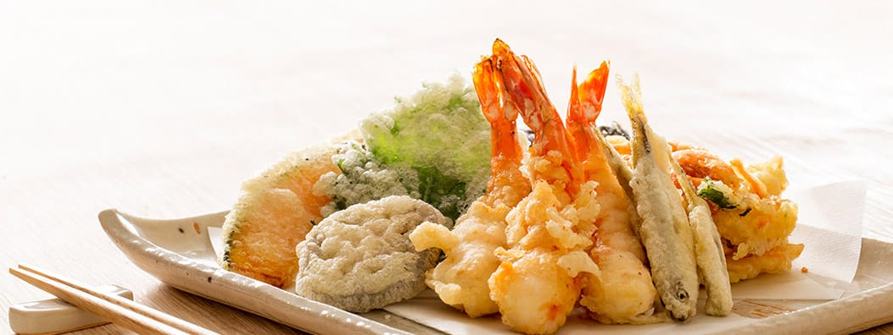
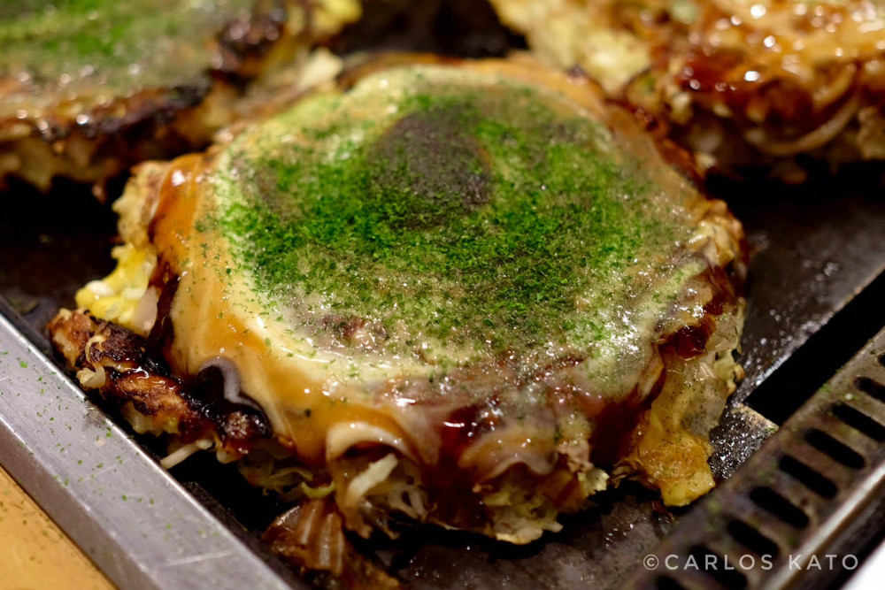

Pratos Japoneses
A culinária japonesa é conhecida por sua delicadeza, equilíbrio e apresentação. Pratos como sushi, ramen, tempurá e okonomiyaki conquistaram o mundo com seus sabores únicos. Ingredientes frescos, como peixe cru, arroz, algas e vegetais, são combinados com técnica e tradição, criando refeições saudáveis e cheias de significado cultural.


